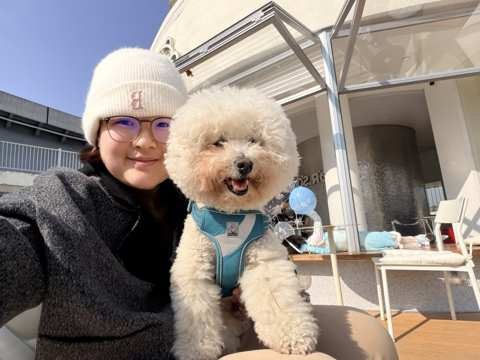

Cooking
Especially Chinese food
Cooking is one of my favorite ways to unwind. I especially enjoy Chinese cooking—recreating familiar flavors, trying new dishes, and making food for people I care about.
I love statistics, but I also care a lot about making room for a full life outside of school and work.
When I am not working on a model or staring at R output, I am probably cooking something, listening to classical music, planning a trip, building LEGO, or finding an excuse to go to Disney. I like hobbies that are either very hands-on or completely absorbing—the kind that make a few hours disappear.

Cooking is one of my favorite ways to unwind. I especially enjoy Chinese cooking—recreating familiar flavors, trying new dishes, and making food for people I care about.
Classical music has been a long-running part of my life. Rachmaninoff and Tchaikovsky are particular favorites, and I also play the piano when I want to disappear into a piece for a while.
I genuinely enjoy the very specific satisfaction of turning hundreds of tiny pieces into something coherent. It is structured, visual, and strangely relaxing.
I love traveling for the mix of food, scenery, culture, and small surprises that do not fit into an itinerary. I also have a very real soft spot for Disney and will happily make room for it in a trip.